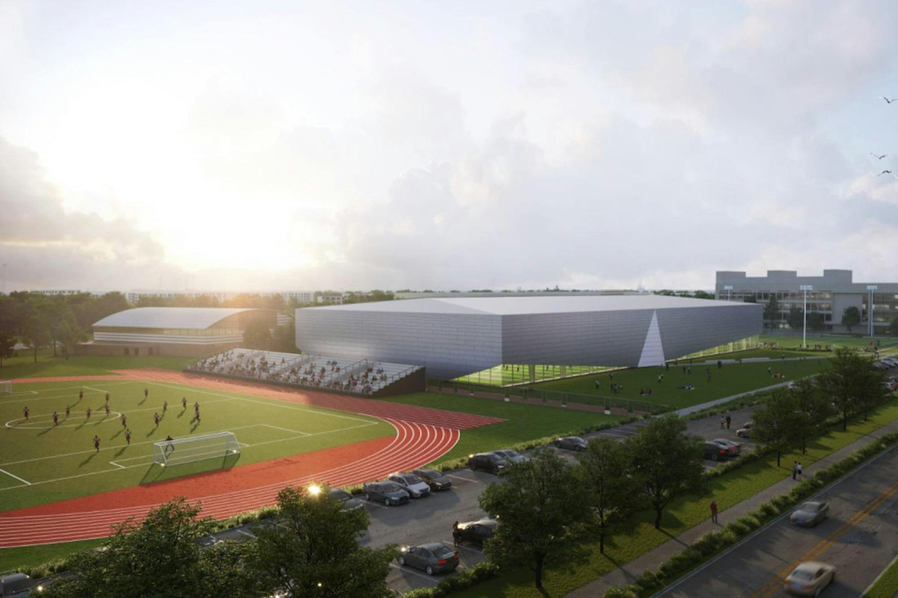

The Co-Ed Professional Sports Fraternity · Cornell Chapter
Cornell's front office for the sports industry.
Cornell produces more sports-relevant work than almost any university in the country. Mu Sigma Lambda brings the industry to you. We host executives, agents, and front-office leaders, run workshops that prepare you for future careers, and connect a network of MuSig members that spans across every college at Cornell.
- Members
- 40+
- Collegiate chapters
- 25+
- National industry partners
- 10+
- Active Cornell alumni in the sports industry
- 1,500+
Undergraduates from every college at Cornell
Mu Sigma Lambda chapters at universities nationwide
Teams, leagues and companies working with the fraternity
Across leagues, clubs, media, agencies and athletics
Where Cornell Alumni Work
About the Chapter
One organization for the whole of Cornell sport.
Mu Sigma Lambda unites Cornell's business, engineering, law, design, science and athletics communities under a single professional organization.
Project Teams
Members lead and build initiatives of their own, turning ideas into research, events, and partnerships across Cornell.
Education
Workshops in sales, valuation, recruiting, personal brand, and more.
Philanthropy
Chapter fundraisers and volunteer opportunities that support the greater Tompkins County.
Access
Executives, agents, league counsel and club leadership speak with our members directly.
Part of a national network. Mu Sigma Lambda has chapters at universities across the country.
Visit Nationals ↗Find Your Path
Every major has a place in this industry.
Select your college and concentration to see how it relates in the professional sports industry.
Get Involved
Founding Class Recruitment
Students start here
Fill out the interest form.
This is the one place to sign up. Tell us a bit about yourself and you will be the first to hear about coffee chats, info sessions, and founding class recruitment once the chapter is approved.
Mu Sigma Lambda · Cornell Chapter
2027 Recruitment Timeline
-
Coffee Chats Open
Date to be announced
-
Club Fest
Date to be announced
-
Info Session #1
Date to be announced
-
PFC Fair
Date to be announced
-
Info Session #2
Date to be announced
-
Coffee Chats Close
Date to be announced
-
Application Opens
Date to be announced
Speak here at Cornell, host a site visit, meet with a member, or partner with the chapter.